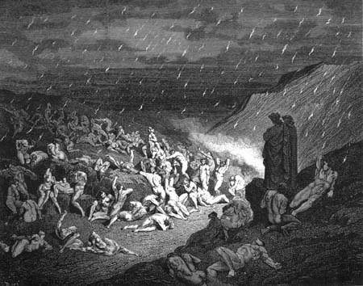

Canto XIVDeserto incandescente - Chuva de brasas
|
|  |
| Os que praticaram violência contra Deus, a natureza e a arte sofrem em um deserto incandescente e são torturados por chuvas de brasas. Ilustração de Gustave Doré (séc XIX). |
- Mestre - perguntei -, quem é aquele que ali está deitado e age como se as brasas não o incomodassem?
E o vulto, percebendo que dele eu falava, respondeu gritando:
- O que um dia fui quando vivo, continuo a ser, agora, morto! Júpiter pode perder as esperanças de vingança. Nem o raio com o qual ele me atingiu no meu último dia, nem estas brasas que ele agora lança sobre mim farão com que eu lhe dê o prazer de se ver vingado!
- Ó Capâneo, já que tua soberba não diminui, o teu sofrimento só aumenta: nenhum martírio, mais que a tua própria ira, seria melhor punição ao teu orgulho! - gritou Virgílio, e depois me explicou - Ele foi rei. Um dos sete que assediaram Tebas. Pelo seu ódio, é condecorado com essas "medalhas" incandescentes que enfeitam seu peito. Agora me acompanha e tem cuidado para não pisar na areia quente, seguindo sempre por este bosque ao lado.
Chegamos a um pequeno riacho, de águas tão vermelhas que me deixaram impressionado. O leito e as margens do rio eram feitas de pedra, e as bolhas liberavam um vapor que extinguiam as chamas que caíam acima e nas proximidades do riacho. Imaginei, portanto, que aquele deveria ser o nosso caminho.
- Entre todas as coisas que te mostrei, não viste nada ainda tão notável quanto este riacho que extingue as chamas que caem sobre ele. - falou o mestre, e eu pedi que ele falasse mais sobre a origem do riacho.
- No meio do mar se encontra um país gasto, que se chama Creta. - explicou Virgilio - Lá existe uma montanha chamada Ida, que, antes fértil e cheia de vida, hoje permanece deserta como coisa velha. No centro da montanha encontra-se um grande velho, que tem suas costas voltadas para Damiata, e seu rosto virado para Roma, que lhe serve de espelho. Sua cabeça é feita do mais puro ouro. De pura prata são seus braços e o peito. É de cobre dali até onde começam as pernas. O resto é todo de ferro exceto o seu pé direito que é de argila, sobre o qual apoia a maior parte do seu peso. Todas as suas partes, exceto a de ouro, estão podres, rachadas por uma fissura por onde fluem lágrimas que descem até os seus pés, onde elas se unem e cavam uma gruta. Pelas rochas penetram e aqui deságuam, formando o Aqueronte, o Estige e o Flegetonte que, no final, formam o Cócito que ainda veremos adiante.
- Se este riacho ao nosso lado tem sua origem no nosso mundo, porque só agora o vimos? - perguntei.
- Tu sabes que este lugar é redondo - respondeu - e que nós, virando sempre à esquerda e descendo, não demos ainda uma volta completa; muito ainda veremos adiante, então, não fiques surpreso ao encontrar algo que não vistes ainda.
- Onde, mestre, encontraremos o rio Flegetonte e o Letes, que não foi por ti mencionado?
- O Flegetonte - respondeu -, é a fonte deste riacho que agora vês saindo da floresta. É aquele mesmo rio de sangue fervente que atravessamos com o centauro. O Letes tu ainda verás, mas fora deste mundo. É lá que se banha a alma penitente que, arrependida, da sua culpa se purifica.
Depois ele me chamou:
- Vem. Está na hora de sairmos deste bosque. Vem pela margem de pedra deste riacho, pois sobre ela o vapor apaga as chamas.